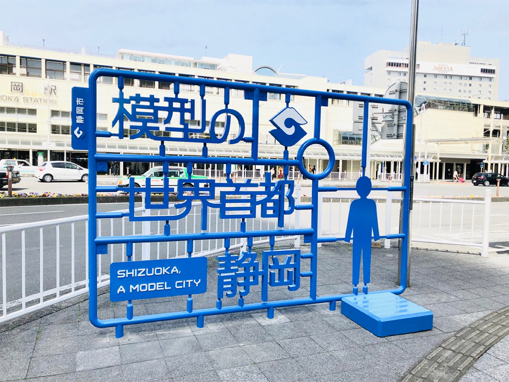
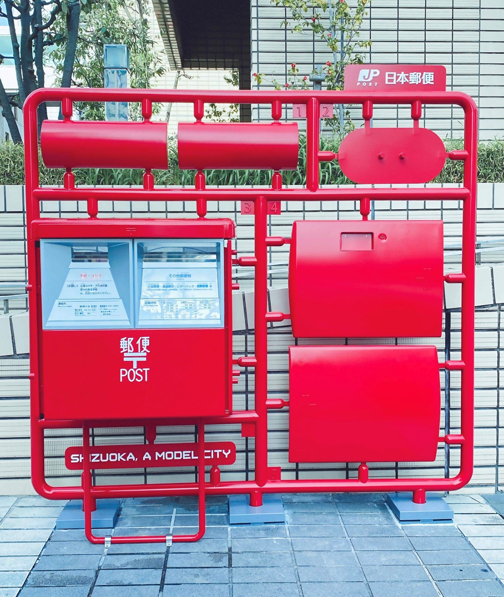
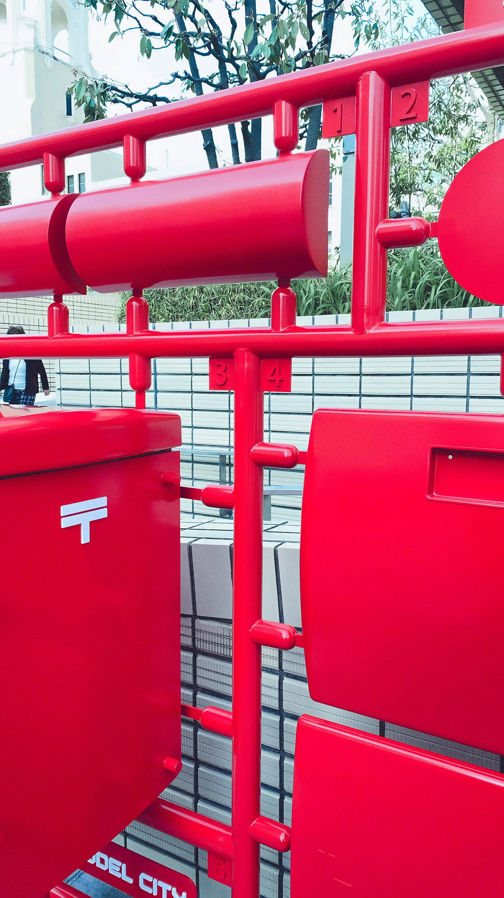

TODAY'S TOPIC
静岡市プラモデル化計画
2020年2月に静岡市が、博報堂静岡、博報堂ケトルと共に立ち上げた「静岡市プラモデル化計画」。静岡市ってプラモデル生産が8割を誇っているんですね！それを日本・世界にアピールするために「まちの風景をプラモデル型に変えていく」プロジェクトのようです。

img source -(https://www.advertimes.com/20210323/article343425/)
街の中にあるさまざまなものを「組み立て前」のパーツに分解したモニュメントのことを「プラモニュメント」と呼ぶそうですが、それが3月19日に初めて4基お披露目されたそうです。


img source -(https://www.advertimes.com/20210323/article343425/)
その中で注目されているのが、日本郵便とコラボした郵便ポストのプラモニュメント。実際のポストを分解した上でプラモデルのランナー型に再形されているようです。これが街にあったら目を惹きますね！
今後もこのプロジェクトでは、小学校で児童がプラモデル産業について学んだり、ものづくり教育の実施、プラモデルを活用したグッズ開発など、プラモニュメント以外にも市民を巻き込みながら活動していくそうです。